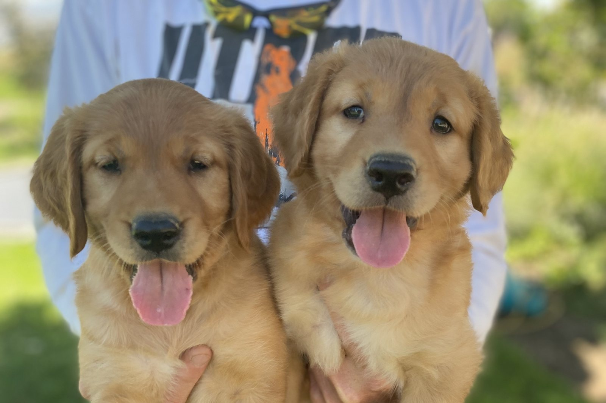
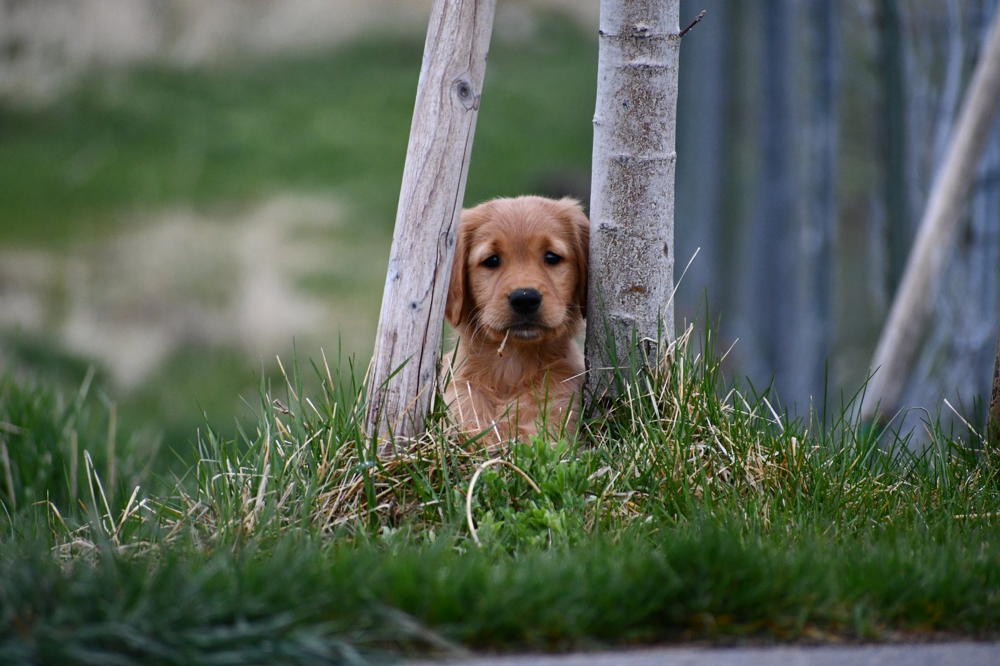
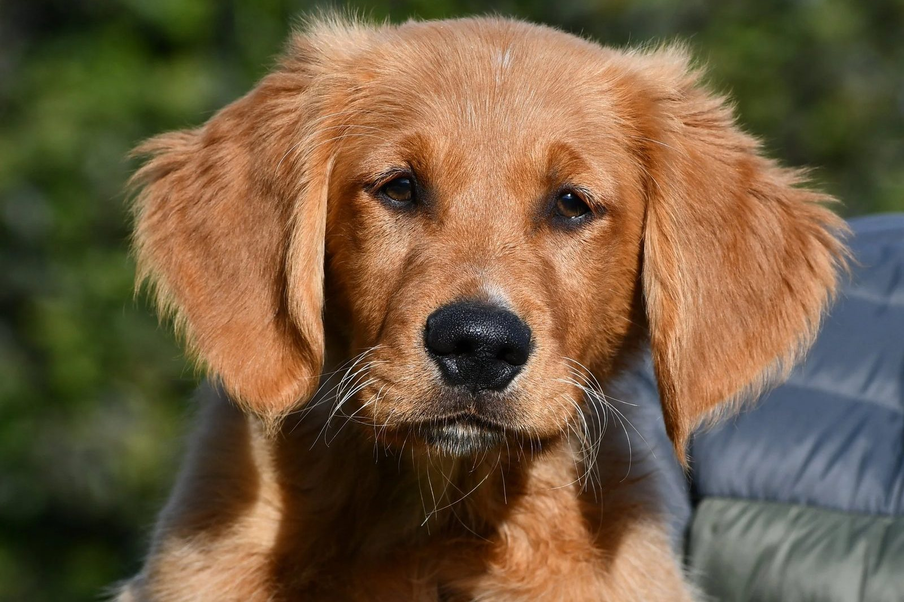
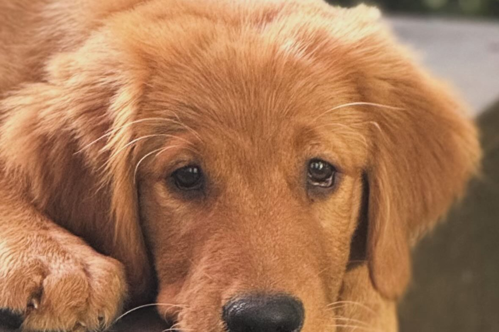

If you shot too close to your puppy and the puppy reacted badly, the first thing I would do is stop shooting around the puppy for now.
Do not fire another shot to see whether the reaction happens again.
Do not take the puppy hunting and hope it forgets about it.
Do not try to make the puppy “get used to” the sound by adding more gunfire.
If the puppy was startled or frightened, more uncontrolled exposure can make the negative association stronger.
The next step is to slow down and watch the puppy’s behavior carefully.
One bad shot does not automatically mean the puppy is ruined
Owners sometimes call me after one bad experience and feel like they have completely ruined their dog.
That is not necessarily the case.
A puppy may be startled by a gunshot without developing a permanent gun-shy problem.
What matters is what happens afterward.
Watch the puppy’s normal demeanor.
Is the puppy still:
- Happy?
- Playing?
- Retrieving?
- Eating normally?
- Interested in birds?
- Moving confidently?
- Acting like itself?
If the puppy quickly returns to normal, that is different from a puppy whose behavior changes every time gunfire is introduced.
Do not keep testing the puppy
One of the biggest mistakes people make is firing another shot because they want to know whether the puppy is really scared.
They think:
“Maybe that first reaction was nothing.”
So they shoot again.
Then maybe again.
That can turn one bad experience into several.
I do not like using gunfire as a test.
If the puppy reacted negatively, take that information seriously.
Back up.
Watch for a change in demeanor
A puppy does not have to run away to show that the gunfire was too much.
The reaction may be more subtle.
Watch for:
- Stopping a retrieve.
- Losing interest in a bird.
- Moving back toward you.
- Becoming unusually quiet.
- Becoming clingy.
- Freezing.
- Lower energy.
- Refusing to range out.
- Watching the shooter instead of the activity.
- Stopping play.
- Stopping eating.
The main question is:
Did the puppy stop acting like itself after the shot?
If the answer is yes, slow down.

Give the puppy a break from live gunfire
If the puppy had a bad reaction, I would not immediately try live gunfire again.
Let the puppy get back to normal positive activities.
That might mean:
- Playing.
- Retrieving.
- Eating.
- Running around.
- Working with birds.
- Spending relaxed time with the family.
The goal is to get the puppy back into a confident, positive state before you introduce sound again.

Rebuild around something the puppy loves
When you begin again, start with something positive.
For many hunting puppies, that can be:
- Birds.
- Retrieving.
- Food.
- Play.
- Chasing.
- Movement.
If the puppy loves birds, build that bird drive first.
If the puppy loves retrieving, use that.
The puppy should be focused on something enjoyable before sound is reintroduced.

Start much quieter than you think you need to
When you return to sound work, do not start anywhere near the same intensity that caused the bad reaction.
Start at a level where the puppy is comfortable.
If you are using live gunfire, that may mean putting the shooter far enough away that the shot is barely noticeable.
If you are using recorded sound, start at an average, comfortable level and progress gradually.
The puppy should remain happy and engaged.
If the sound becomes the biggest thing in the puppy’s mind, you have gone too far.
The positive activity should stay more important than the sound
This is one of the main rules I use.
If the puppy is chasing a bird or retrieving a bumper and hears a distant shot, I want the puppy to keep going after the bird or bumper.
The positive activity should be more important than the gunfire.
If the puppy stops, turns toward the sound, comes back to you, or loses drive, the sound was too intense.
Back up again.
- 1Stop live gunfire
- 2Get the puppy happy again
- 3Start much quieter
- 4Move only if demeanor stays normal
Do not rush to get back to a shotgun
Owners sometimes feel pressure to get the puppy back around live gunfire quickly because they want to hunt.
That can make the problem worse.
The puppy does not care whether hunting season starts in two weeks.
If the puppy is telling you that the sound is too much, the correct response is to slow down.
A few extra weeks of careful work can be much better than creating a problem that takes months to repair.
Gunshy Fix can be a controlled way to start over
If a puppy reacted badly to live gunfire, one option is to step away from live shooting and work on the sound in a controlled home environment.
That is one reason I like using Gunshy Fix with puppies.
The program begins with calming music and gradually introduces gunfire through the lessons.
You can play the lessons while the puppy is:
- Eating.
- Playing.
- Retrieving.
- Relaxing.
- Spending time with the family.
- Doing another positive activity.
The goal is to help the puppy hear the sound without a negative change in demeanor.
How to progress after a bad experience
Start with the first lesson.
Play it at a comfortable volume.
Then watch the puppy.
If the puppy continues acting normal, keep using that lesson until it is completely comfortable.
Then move to the next lesson.
If the puppy becomes nervous at the next level, go back to the previous lesson.
Stay there until the puppy is relaxed again.
Only then should you try moving forward.
Do not move ahead because of a schedule.
Move ahead because the puppy is ready.
When should you try live gunfire again?
I would not return to live gunfire until the puppy is showing:
- Normal energy.
- Strong interest in positive activities.
- No negative reaction to the sound progression.
- Confidence around birds or retrieving.
- No change in demeanor when controlled gunfire sounds are present.
When you do return to live gunfire, start far away.
The shot should be barely noticeable.
Then progress gradually.
How far away should the shooter be?
There is no one correct distance.
The right distance is far enough away that the puppy can hear the shot without changing its behavior.
For one puppy, that may be a long distance.
For another, it may be less.
The puppy decides.
If the puppy keeps chasing, retrieving, or hunting with the same energy, that is a good sign.
If the puppy shuts down, move farther away.
What if the puppy seems fine the next day?
That is encouraging, but I still would not immediately repeat the same close shot.
A puppy can appear normal afterward and still have learned something negative from the experience.
The safest approach is to restart more gradually.
Build positive experiences first.
Then introduce sound at a much lower intensity.
There is no benefit to testing the puppy again just because it looks okay.
What if the puppy is still nervous around loud sounds?
If the puppy continues reacting negatively to loud sounds, back away from live gunfire.
Work at a much lower level.
If the puppy is still shutting down even with controlled sound, the process may need more time.
Some dogs are more sensitive than others.
Patience matters.
When should you consider professional help?
Professional help may be a good idea if:
- The puppy repeatedly shuts down around gunfire.
- The puppy has stopped retrieving.
- The puppy has lost interest in birds.
- The puppy refuses to range out.
- The puppy becomes severely anxious around loud sounds.
- You do not have access to birds.
- You do not have safe property for live-gun work.
- You do not have another person to handle the gun at a distance.
- You are not sure how to read the puppy’s body language.
A professional trainer can help control the distance, timing, birds, and live-gun progression.
Do not beat yourself up — change the plan
People get excited.
They want their puppy to hunt.
They move too fast.
It happens.
The important thing is what you do next.
Do not keep repeating the same mistake.
Slow down.
Back up.
Build something positive.
Watch the puppy.
Then introduce sound gradually.
That gives the puppy the best chance to move forward.
Preventing a bigger problem starts now
If your puppy reacted badly to a close gunshot, the best thing you can do is stop testing and start rebuilding confidence.
One bad experience does not automatically mean the dog will always be gun shy.
But repeated bad experiences can make the problem much harder to repair.
Take the reaction seriously.
Go slower.
Let the puppy set the pace.
Start again with a controlled approach
Gunshy Fix was created as a controlled way to introduce or reintroduce the sound of gunfire at home.
The lessons combine calming music with progressively introduced gunfire so the puppy can move forward based on its comfort level.